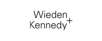

The Choice of Fortune 500 Brands and Award-Winning Agencies.
Our client’s have high expectations. We make sure to consistently deliver on our promise of best-in-class technology, ceaseless innovation and most importantly, all the support they need to ensure success.
Agencies find value in Unmetric for a variety of situations, including new business pitches and new product launches. When being smarter than your client is essential, Unmetric keeps you ahead of the curve.
Brands like Toyota, American Airlines and Lowe’s save time, money and other resources with Unmetric. Data collection time is reduced, allowing their people to focus on uncovering insights rather than crunching numbers.
-


-